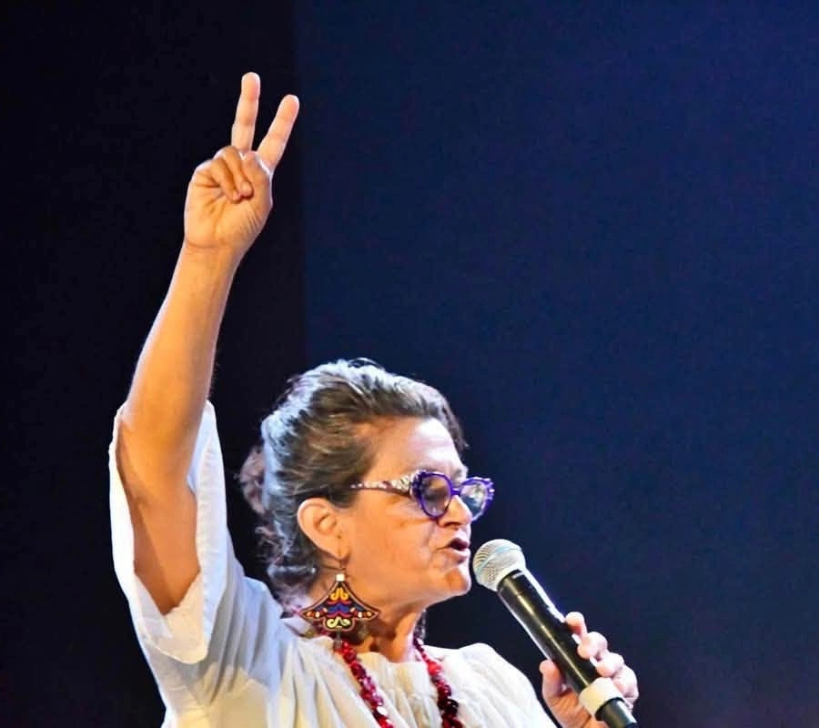

JUSTICE ÉCONOMIQUE
- Faire payer leur juste part aux ultra-riches
- Une transition juste qui ne laisse personne derrière
- Des options publiques pour en finir avec les prix abusifs

Votre candidate dans
Laurier—Sainte-Marie

Nimâ Machouf
On nous répète qu’en ces temps incertains, il faut se serrer la ceinture et baisser les bras. Qu’il faut choisir entre notre portefeuille et nos besoins. Entre nos emplois et la planète. Entre aujourd’hui et demain.
Nous n’avons pas à choisir.
Le Canada est un pays riche. Assez riche pour loger tout le monde. Assez riche pour affronter la crise climatique sans compromis.
La vraie question n’est pas de savoir si on en a les moyens. C’est de savoir à qui doit profiter cette richesse. À la population, ou à une poignée d’ultra-riches?
Nos droits.
Notre argent.
Notre avenir.
Reprenons ce qui est à nous.
Nimâ Machouf
Le NPD est le seul parti à Ottawa qui défend le peuple, pas la Bourse. Parce que la politique, si ce n’est pas de s’occuper des membres de notre communauté, à quoi ça sert?
Depuis, plusieurs ont misé sur Steven Guilbeault pour changer le Parti libéral de l’intérieur. Le résultat? Depuis l’élection de Mark Carney, on a dit adieu à la tarification carbone pour les consommateurs et bonjour aux nouveaux pipelines. Guilbeault, l’environnementaliste pour qui les citoyens et citoyennes de Laurier–Sainte-Marie ont voté, a lui-même décidé de claquer la porte au gouvernement de Carney.
La leçon est claire. On ne change pas les libéraux de l’intérieur. On les force à bouger de l’extérieur.

Une Montréalaise de cœur. D’origine iranienne, Nimâ est née en France pendant les études de ses parents. Elle rentre en Iran à l’âge de huit ans. La famille Machouf doit fuir la répression du régime des ayatollahs. En 1983, elle arrive à Montréal. Elle y étudie, y fonde sa famille et y plante ses racines au cœur de sa communauté.
Une scientifique. Épidémiologiste et docteure en santé publique, spécialiste du VIH, des maladies infectieuses et de la toxicomanie, elle enseigne à l’École de santé publique de l’Université de Montréal.
Une militante de terrain. Huit ans au conseil d’administration de Médecins du Monde. Des missions en Afrique et en Amérique centrale. Des décennies d’engagement féministe et communautaire.
Une femme de courage. En octobre 2025, elle embarque sur le Conscience, un navire humanitaire de la flottille en route vers Gaza. L’armée israélienne l’intercepte en mer. Nimâ est détenue, puis expulsée. Elle le referait sans hésiter : le siège de Gaza doit être brisé.
Guilbeault est parti. Place à Nimâ.
Nos priorités